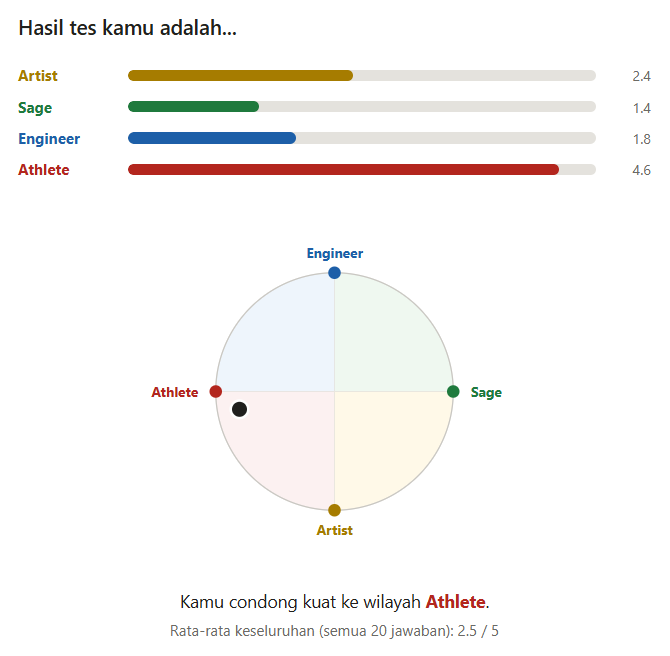
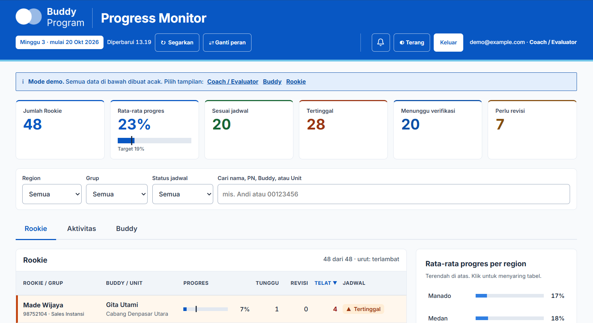
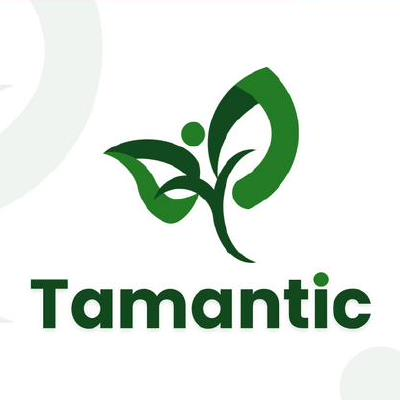

I build things that take an idea to a working prototype.
Computer Science graduate from Jakarta. I move between applied machine learning, web and mobile development, and workflow automation, and I like testing whether the result is actually useful to the people using it.
I studied Computer Science at Universitas Bina Nusantara (2020–2025) with a software engineering focus. My foundation covers web development with Laravel, Android development with Kotlin, and object-oriented programming in Java and C++.
My thesis applied computer vision to medical imaging, and my current internship in a corporate Human Capital division has pushed me toward practical automation: mapping manual processes, building small internal tools, and running pilots before anything gets scaled.
I'm based in Jakarta and comfortable working in both Indonesian and English.
Projects
Thesis
Thorscribe — chest X-ray image captioning
Universitas Bina Nusantara · 2025
Fine-tuned Florence-2, a vision-language model, to generate descriptive captions for chest radiographs, using the thorax subset of the ROCOv2 dataset. The goal was to support the identification of thoracic findings through readable text rather than a bare classification label.
The best configuration (learning rate 1e-6, weight decay 0.05) reached a validation loss of 1.18. I evaluated it two ways: automatic metrics (BLEU, ROUGE-L, METEOR, CIDEr, BERTScore, CLIP Score) and a user study with 50 respondents, who rated caption accuracy 3.4 out of 5 on average.
Florence-2Computer visionFine-tuningMedical imagingUser study

Result screen of the live quiz (Indonesian UI)
Self-assessment quiz platform
Design, front end and automation pipeline
A self-assessment quiz built on the Innovation Code framework, designed for a general audience. Instead of forcing a single "type", scoring is vector-based: answers across four archetypes combine into one point on a wheel, so results show a blend and its intensity.
It runs as a static quiz on Cloudflare Workers, with scores passed through a small proxy (rate limiting and session tokens) into Power Automate and Excel Online, and joined to Microsoft Forms responses. Earlier iterations used Google Forms with an Apps Script web app; I switched stacks when hosting and tooling constraints changed.
HTML / JSCloudflare WorkersPower AutomateMicrosoft FormsApps Script

Progress monitor in demo mode, with randomly generated data (Indonesian UI)
Mentoring program pilot with live dashboard
Internal pilot · Google Workspace + Cloudflare
A buddy–rookie mentoring program run as a parallel pilot for dozens of pairs. Participants report activities through Google Forms; an Apps Script backend writes to Google Sheets, and a custom dashboard hosted on Cloudflare shows near real-time progress.
Over several iterations I worked through multi-role Google sign-in (one account holding several roles), per-participant verification, file-upload evidence, caching to keep load times down, and role-based views so each person only sees what they should. I also produced a UI/UX brief with personas, status definitions and brand colors for external design.
Mapped how several complaint-handling units work, from verification and investigation through follow-up, evaluation and analytics, and separated routine activities from improvement work. I then assessed which steps are good automation candidates and what could go wrong in each.
The scope was a proof of concept with recommendations rather than a full AI rollout, with Microsoft Power Automate and Excel as the candidate tools. I framed options as tiers, from rule-based routing up to ML classification and generative copilots, since each step up adds compliance risk.
Process mappingPower AutomateExcelAutomation design

Tamantic
Bangkit Academy capstone
An e-commerce app integrated with machine learning, built as the capstone of the Entrepreneurship track of Bangkit Academy (a program run with Google, Tokopedia, Gojek and Traveloka).
MobileMachine learningTeam project
Health data analytics
Universitas Bina Nusantara
Worked on building machine learning systems from health datasets as part of the university's Health Data Analytics work.
Google Apps ScriptPower AutomateCloudflare Workers / PagesGoogle SheetsExcel
Working style
Prototype first, iterateProcess mappingDashboard and UX briefs
Journey
2026 – present
Intern, Human Capital division
Government-sanctioned undergraduate internship (Maganghub) at a major Indonesian bank. Working on process mapping, automation proofs of concept, program tooling and presentations.
2025
Thesis: Thorscribe
Fine-tuned Florence-2 for chest radiograph captioning, evaluated with automatic metrics and a 50-person user study.
2020 – 2025
Bachelor of Computer Science (S.Kom), Universitas Bina Nusantara
Software engineering focus: Laravel, Kotlin, Java, C++, plus health data analytics.
Bangkit Academy
Entrepreneurship track
Capstone project Tamantic, an e-commerce app with machine learning.
Contact
Open to internships, junior roles and collaborations in software engineering, applied ML and automation.